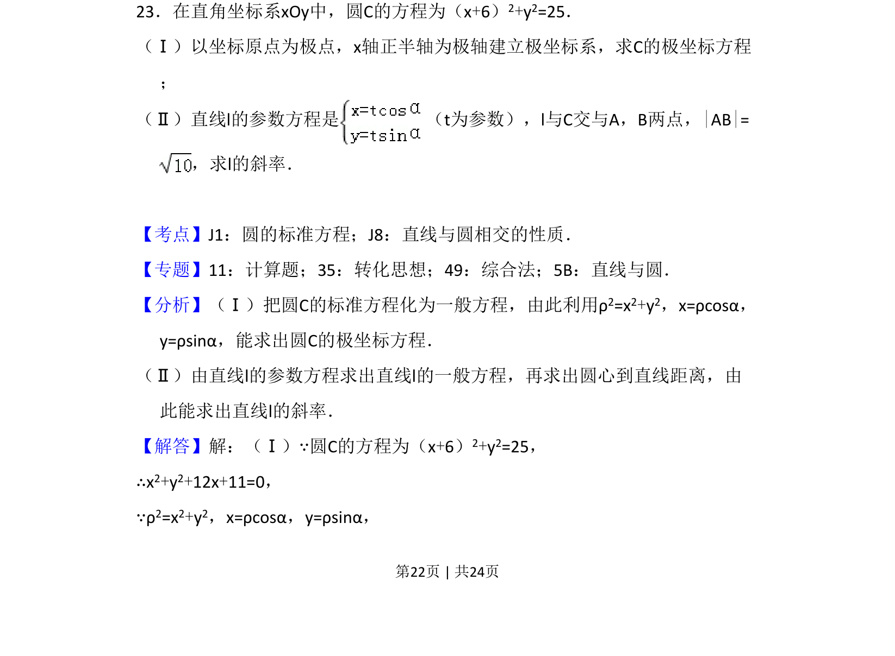
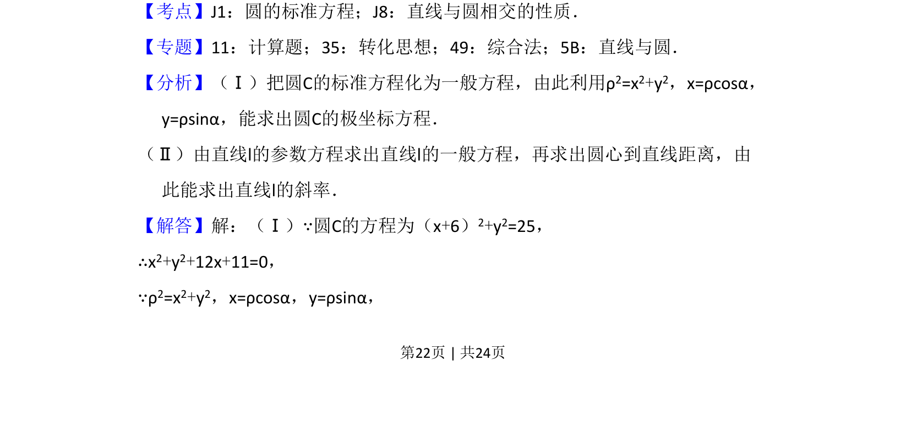
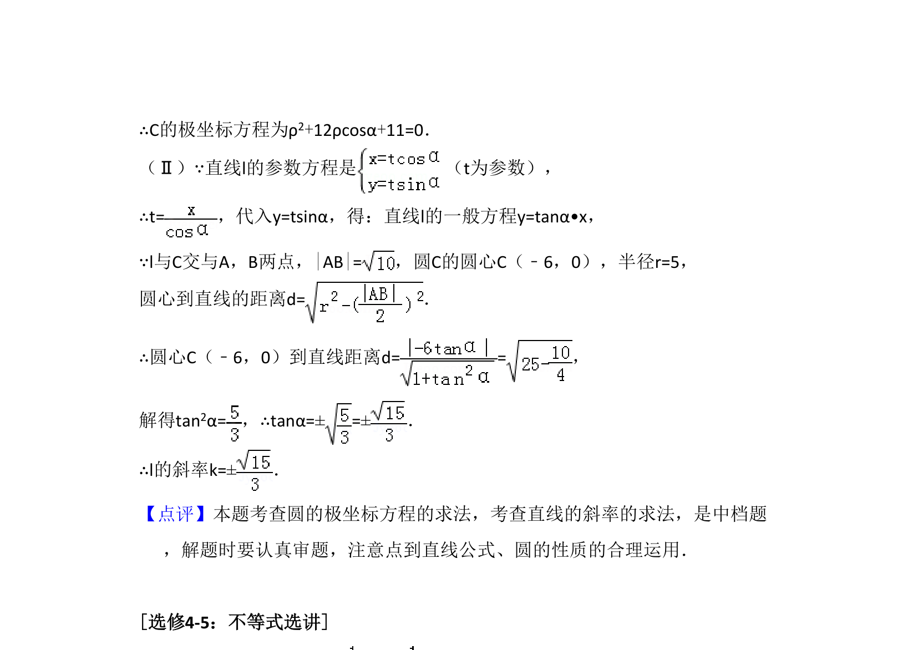

考点：极坐标方程 直线与圆相交 弦长 斜率

本题要求将圆的直角坐标方程转化为极坐标方程，并利用直线参数方程与弦长求斜率。


📄 原 PDF 第 22 页：
素材/真题/吉林/2008-2024·（吉林）数学高考真题/2016年高考数学试卷（理）（新课标Ⅱ）（解析卷）.pdf
23．在直角坐标系xOy中，圆C的方程为（x+6）2+y2=25． （Ⅰ）以坐标原点为极点，x轴正半轴为极轴建立极坐标系，求C的极坐标方程 ； （Ⅱ）直线l的参数方程是 （t为参数），l与C交与A，B两点，|AB|= ，求l的斜率．
【考点】J1：圆的标准方程；J8：直线与圆相交的性质．菁优网版权所有 【专题】11：计算题；35：转化思想；49：综合法；5B：直线与圆． 【分析】（Ⅰ）把圆C的标准方程化为一般方程，由此利用ρ2=x2+y2，x=ρcosα， y=ρsinα，能求出圆C的极坐标方程． （Ⅱ）由直线l的参数方程求出直线l的一般方程，再求出圆心到直线距离，由 此能求出直线l的斜率． 【解答】解：（Ⅰ）∵圆C的方程为（x+6）2+y2=25， ∴x2+y2+12x+11=0， ∵ρ2=x2+y2，x=ρcosα，y=ρsinα，